프로젝트 총괄 ― 리서치, 데이터 분석, 기획, UIUX ― 보고 문서 및 브리핑 진행, 전사 워크샵 진행
프로덕트 디자이너 2, 데이터 엔지니어 2, FE 엔지니어 6
2022~2023
애니디바이스 프로젝트란? 온라인 비즈니스 환경 변화에 따른 서비스 피봇.
'웅진씽크빅'은 영유아 및 초등학생을 대상으로 교육 서비스를 제공하는 기업이며, 어린이 대상 전집을 제작하는 출판사다. 주요 서비스는 독서 중심의 '북클럽', 종합
학습 '스마트올', 단과목 방문 학습 '씽크빅'이 있으며, 이는 AOS 기반 전용 태블릿에 맞춰 개발되어 있었다. 고객은 이 전용 태블릿을 통해, 1~3년의 약정
기간 동안 월 5~30만원의 사용료를 지불하며 서비스를 이용하고 있었다.
2022년 교육부의 1인 1태블릿 보급 정책으로, 기존 전용 태블릿만 지원하던 구조에서 모든 기기를 지원하는 애니디바이스Any Device로 대응이 필요한
상황이었다. 주 목적은 기존 AOS 기반 개발 프레임워크에서 Flutter · React Native 기반 변경이지만, 이를 단순한 기술 이전이 아닌 누적된 레거시
해소에 따른 구조적 사용성 개선의 기회로 판단했다.
이에 입사 직후, 사내 주요 서비스를 조망하며 정량 · 정성 분석을 통해 문제를 정의하고 사용성 개선 방향을 수립하는 업무를 진행했다. 각 서비스의 궁극적인 방향과
세부적인 To Do를 설정하고, 대표님 보고 후 IT 조직 리더분들 대상으로 워크샵을 진행해 넥스트 UX 방향성을 전파했다. 이후 애니디바이스 대응 서비스 중,
'웅진북클럽'에 적용했다. 다음 장에서 서비스 분석에 따른 방향성 재설정과 이에 따른 피봇 과정을 소개한다.
아이가 생애 처음 접하는 교육 서비스, 그 역할에 대한 고민.
SNS와 숏폼 등, 디지털 미디어의 대중화로 아이들의 문해력은 점점 낮아지고 있고, 사회적인 문제로 대두되고 있다. 능동적 행동과 집중력이 요구되는 독서는 학습의
기초이며, 뇌신경 발달이 완성되는 12세 전까지 습관 형성 여부에 따라 아이들의 미래에 큰 영향을 끼친다.
'웅진북클럽'은 독서를 통한 학습 능력 향상을 목적으로, 평균 4세부터 시작하여 초등학생까지 주로 이용한다. 아이가 생애 처음 접하는 교육 서비스이며, 학습 및
문해력 향상에 가장 중요한 시기에 사용하지만, 이 서비스 또한 디지털 기기를 통한 독서의 한계가 있었다.
이에 '애니디바이스'로 개발 환경을 전환하는 프로젝트를 통해, 오래된 레거시를 제거하고 디지털 독서의 근본적인 문제를 해결하고자 했다. 그리고 디지털 기술의 장점을
역으로 활용하여 올바른 독서 습관 형성을 도울 수 있을지 고민했다.
독서 습관 형성 목표를 위한 핵심 지표 설정.
이 서비스는 방학 기간동안 홈스쿨링에 의해 AU가 증가하며 연말에 신규 회원 가입이 증가하는 특징이 있다. 이에 팬데믹 기간 성장을 이어왔다. 하지만 2022년 5월
위드코로나 이후 여름 방학 기간 MAU가 눈에 띄게 하락 1 했고, 연말 신규 회원 증가율도 크게 감소 2 했다.
서비스 충성도를 보여주는 고착도는 또 다른 시사점을 제공했다.
일 단위 평균 고착도 DAU/MAU는 약 37%이지만, 주 단위 WAU/MAU의 경우 72.5%로
비교적 높다. 이는 주 1회 관리 교사의 학습이 포함된 멤버십 비중이 높아 아이들이 자발적으로 서비스를 이용하기보다는, 정해진 요일에 의무적으로 과제를 수행하는
형태로 인식하고 있음을 보여준다.
기존 핵심 지표는 회원수 증가에 따른 MAU 확대에 초점이 맞춰져 있었으나, 위드 코로나와 출산률 저하로 인해 현실적으로 어렵다고 판단했다. 이에 주 1회 이용하는
아이들의 강제성을 걷어내고 자기 주도 독서 습관 형성에 집중해, DAU를 WAU 수준까지 끌어올려 격차 최소화를 새로운 목표로 설정했다. 이를 통해 일 단위 고착도를
향상시켜, 이론적 최대치인 77%까지 단계적으로 지표의 우상향을 기대했다.
이러한 자발적 고착도 향상은 서비스 연장뿐만 아니라, 향후 고학년 대상 자사 서비스로의 전환 가능성을 높이는 신뢰 지표로 작용할 것이다.
MAU | 2021.1 - 2023.4
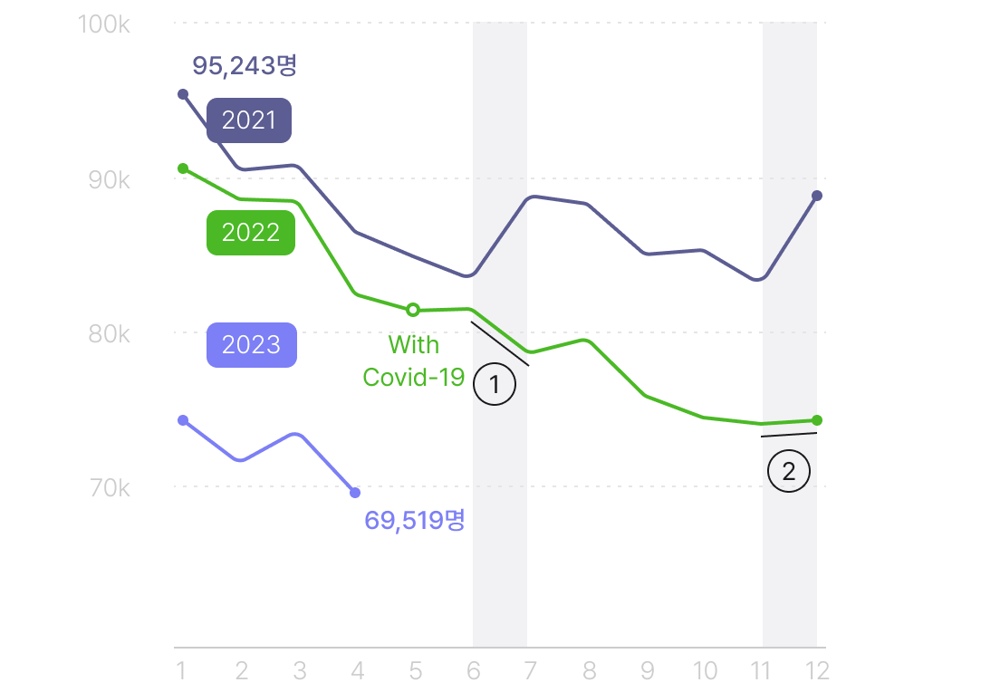
위드코로나 이후 하락 추이
신규회원 골든타임대, 성장률 둔화
고착도 | 2021.1 - 2023.4
WAU/MAU : 주 1회 관리 수업에 따른 강제성
DAU/MAU : 습관 형성 목적으로 주목해야 할 지표로 정의
실 사용 리뷰와 내부 VOC를 종합하여 아이 보호자의 불만과 니즈 파악.
아이의 생애 첫 교육 서비스라는 특성과 높은 비용, 긴 약정 부담으로 인해 보호자들은 서비스 선택에 매우 신중하며 여러 제품을 비교해 결정한다. 이에 맘까페 등
커뮤니티에서
찾아보는 리뷰 및 반응을 수집 · 분류하고, 내부 CS에 접수된 VOC를 분류해 아래 공통된 의견을 도출했다.
결과적으로 서비스의 강점으로 홍보되던 도서 및 약 2만 종의 방대한 콘텐츠가 실제 이용 과정에서는 충분히 활용되지 못하고 있음을 확인했다. 이는 아이가 스스로
활용하기
어려운 구조적 문제에서 비롯된 현상으로, 서비스 이용 시작 6주차에 해지율이 급등하는 원인으로 판단했다.
출시 초기 방향성에 맞춰 운영한 서비스의 고객 반응 파악.
이 서비스는 2014년 출시 당시 설정한 세 가지 방향성을 기반으로 운영해왔다. 출시 8년 차인 2022년, 이 방향성이 고객에게 제대로 전달되고 있는지 앞서 수집한
VOC와 대조해 확인했고, 변화된 상황에 대응하기 위해 전반적인 서비스 방향성을 재검토할 필요성이 있다고 판단했다.
고객 조사에 근거하여 Task별 구체적인 사용성 문제 정의.
그리고, 초기 방향성에 맞춰 운영된 서비스의 사용성을 아이들의 독서 여정에서 발생하는 주요 Task로 구분하고, 수집한 VOC과 매칭하여 아이들이 직접적으로 겪는
문제점을
도출했다.
Task A. '탐색' 문제 : 파편화된 운영에 따른 복잡한 정보 구조.
기존 서비스의 독서 탭은 주제와 성격에 따라 큐레이션 되어, 총 6개 메뉴 내 12개 섹션으로 구성되어 있었다. 이 섹션들은 각각 다른 조직이 담당했으며, 외주
용역을 통해
개별적으로 운영해왔고, 조직별 상이한 의사결정과 아웃소싱이 누적되면서 비용 낭비는 물론 시각적 및 사용성 파편화가 발생했다.
세로 스크롤, 이너 스크롤, 플리킹 등 탐색 방향이 제각각이었고, 섹션 명칭 또한 모호해 탐색의 복잡함이 가중되었다. 이러한 복잡성은 '힉의 법칙'에 따라 아이들에게
과도한
인지 부하를 초래한다. 즉, 복잡한 탐색 여정은 서비스 전반의 순환적 탐색을 방해하고, 아이들은 관심 콘텐츠를 놓칠 가능성이 크다.
Task A. '탐색' 문제 : 연령대 구분의 불합리성.
'메인' 메뉴는 1~3세, 4~6세, 7~13세, '주제' 메뉴는 4~6세와 7~9세 등, 하나의 메뉴 안에 모든 연령대 섹션을 전시하고 있었다. 이는 서비스 초기
'콘텐츠를 최대한 많아 보이게 전시'하는 정책과, 13세까지 이용할 수 있음을 강조하는 의도였다.
하지만 영유아와 초등 저학년은 1년 차이만으로도 인지 발달 수준에 큰 차이가 나타난다. 이는 아이의 발달 단계와 맞지 않는 콘텐츠를 불필요하게 느껴질 수 있으며, 이
자체가
탐색 여정의 복잡함을 가중할 수 있다.
또한 이 연령대 구분은 평균적인 기준에 불과해 실제 서비스를 이용하는 아이의 인지 발달 단계와 맞지 않는 경우가 있었다. 결국 아이는 자신에게 맞는 콘텐츠를 찾기
어려워하고, 보호자는 이를 발달 지연으로 오해해 불안감을 느끼는 상황이 발생했다.
Task A. '탐색' 문제 : 전체 연령대 '섹션별 탐색 지표' 분석.
'탐색 여정의 복잡함은 서비스의 순환적 탐색을 방해한다'라는 가설은 데이터를 통해 깊이있게 확인할 수 있었다.
월 단위로 집계한 전체 이용자수(1) 데이터를 보면, 첫 화면인 독서 탭의 'Ai맟춤' 섹션에 집중된 탐색 패턴을 보여주고 있다. 이는 'Ai맞춤' 섹션과 '누리 ·
교과'
섹션(2)을 제외한 나머지 섹션은 4명 중 3명이 한 달 동안 한 번도 이용하지 않았다는 의미로, 아이들의 흥미를 충분히 끌지 못했거나 인지도가 낮을 가능성을
시사한다.
독서 탭의 이용자수는 전체 대비 79%로 높지만, 이용횟수는 27%에 불과하다. 특히 이용자수 대부분 Ai맞춤에 머무는 점에서 콘텐츠 추천 방식을 다시 고민할 필요가
있으며, 이 외 2Depth 구성 개선의 필요성을 보여주고 있다. 또한 기존 방향성 중 '독서와 학습의 융합'에 따라 '씽크빅'과 함께 이용하는 경우, 상대적으로
집중력이
짧은 아이들은 독서를 건너뛰고 주 1회 정해진 학습만 수행하는 경향일 수도 있다. 이는 WAU가 높게 나타나는 것으로 유추할 수 있다.
이용자수 : 섹션 방문 후, 콘텐츠를 1회 이상 이용한 경우 집계.
누리(교과) 섹션이 상대적으로 높은 이유는 관리 교사의 교보재로 활용.
전체 이용자수 | 2021.8 - 2022.12
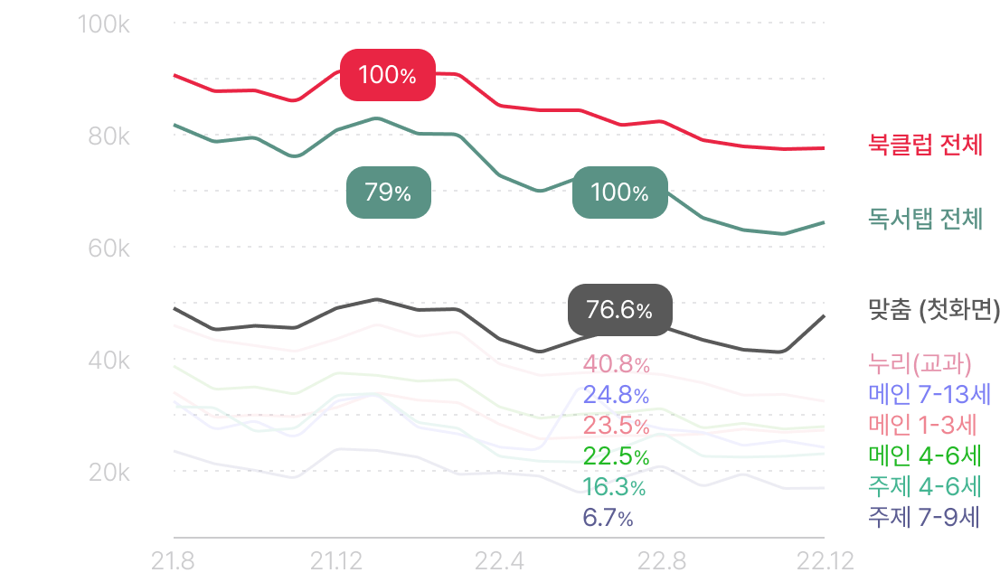
첫 화면 맞춤 섹션에 집중된 탐색
전체 이용횟수 | 2021.8 - 2022.12
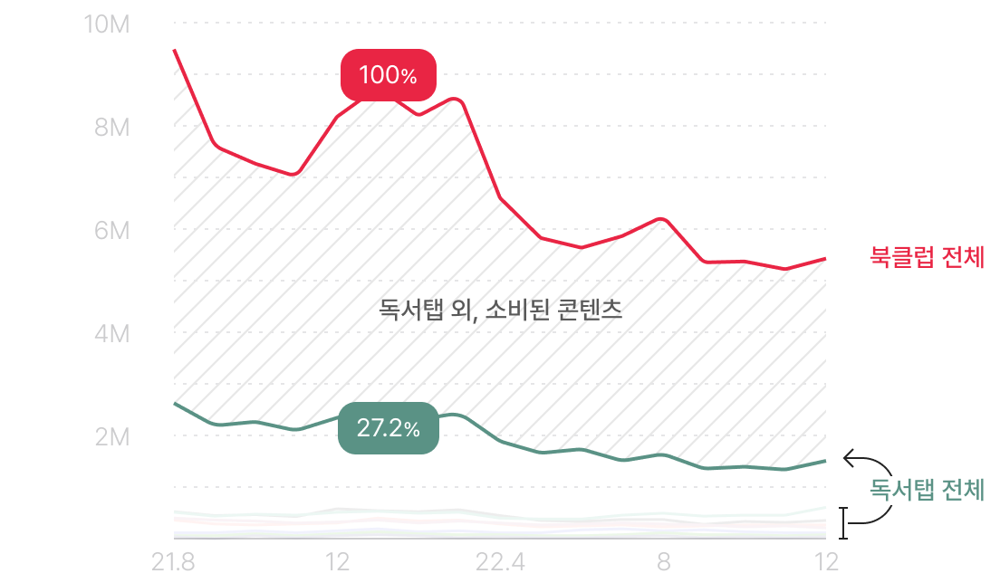
-- Temp --
Task A. '탐색' 문제 : 세부 연령대별 '섹션별 이용자수 대비 이용횟수' 분석.
'메인', '주제' 등 연령대로 구분된 섹션이 모든 아이에게 노출되면서, 각 아이가 어떤 연령대의 섹션을 소비하는지 확인할 수 있었다. 대부분은 자신의 연령에 맞는
섹션에
진입하지만, 4~6세 영유아를 제외하고, 1인당 이용횟수는 실제 연령보다 한 단계 낮은 섹션에서 더 많았다.
그러나 연령대 구간으로 명시된 섹션 구조는 명칭에 대한 오해로 인해 다른 연령대 섹션의 흥미로운 콘텐츠를 놓칠 가능성이 있어, 올바른 전시 방식이라고 보긴 어렵다.
따라서
1~3세, 4~6세, 7~13세 등, 연령별 구간 중심의 분류 방식이 적절한지 재검토할 필요가 있었다.
4-6세 월 이용자수 | 단위: 명
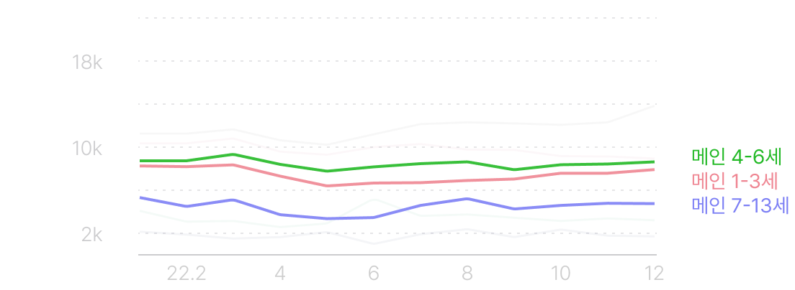
4-6세 : 연령대에 맞게 진입
4-6세 1인당 월 평균 이용횟수 | 단위: 권
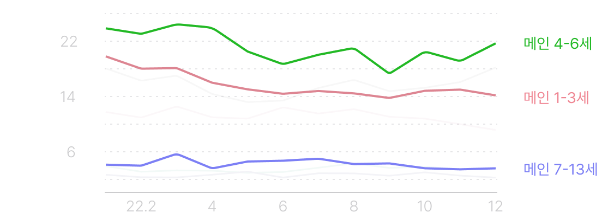
연령대에 맞게 소비
7-9세 월 이용자수 | 단위: 명
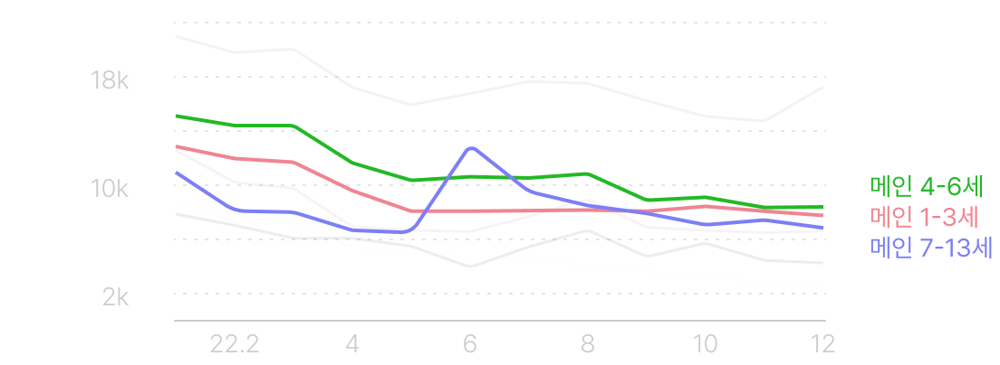
7-9세 : 불규칙한 패턴 · 비교적 골고루 진입
7-9세 1인당 월 평균 이용횟수 | 단위: 권
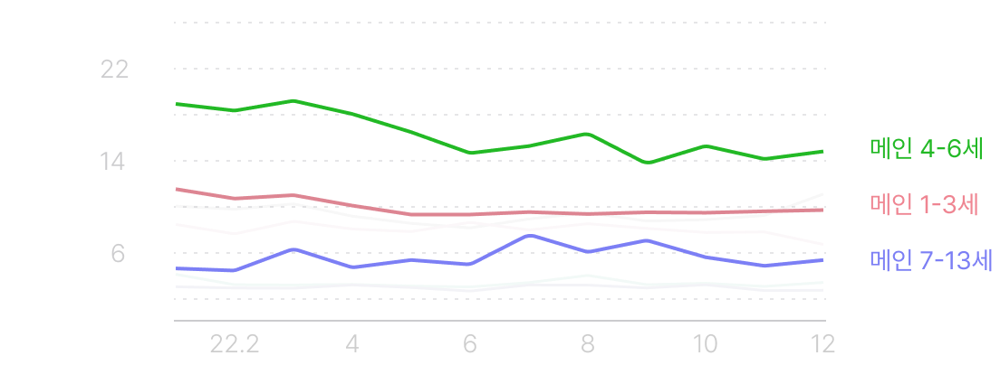
'메인 4-6세 섹션'을 주로 소비 / 실 연령대인 '메인 7-13세' 섹션 소비 저조
10-12세 월 이용자수 | 단위: 명
10-12세 : 연령에 맞게 7-13세 섹션 주로 진입
10-12세 1인당 월 평균 이용횟수 | 단위: 권
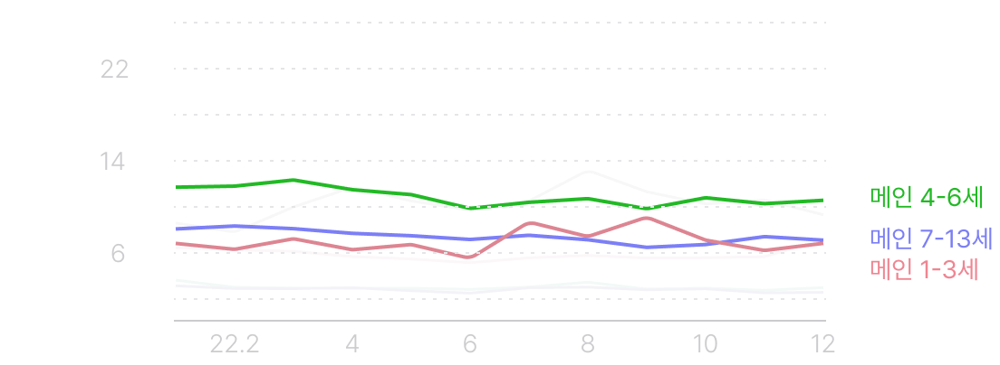
초등 고학년도 '메인 4-6세' 섹션 소비가 더 많음 / 의외로 '메인 1-3세' 섹션 소비도 꽤 많음
현재 서비스에서는 연령대별 섹션을 On · Off 할 수 있는 옵션을 제공한다. '많은 콘텐츠로 인한 선택 장애' VOC에 대응하기 위한 방안으로 추가된
기능이지만,설정에 숨겨져 있어 사용률은 1% 미만으로 높지 않았다. 또한 이 방식은 사용률과 무관하게 연령대와 상관없이 실제 소비 가능성이 있는 콘텐츠까지 노출에서
제외될 수 있어, 기존 연령대 구분 전시 방식은 적절하지 않다고 판단했다.
Task A. '탐색' 문제 : 업데이트 주기에 따른 연령대별 이용자수 패턴.
섹션별 업데이트 주기와 방식이 연령대별 이용자수에 미치는 영향을 확인했다.
4~6세, 영유아 아이들은 업데이트 주기에 따른 유의미한 패턴은 보이지 않았다. 이는 유아기의 특성상 한 번 관심을 가진 콘텐츠를 반복해서 보거나 보호자의 사용
유도에 영향을 받기 때문으로 추측된다.
4-6세 1일 이용자수 | 단위: 명
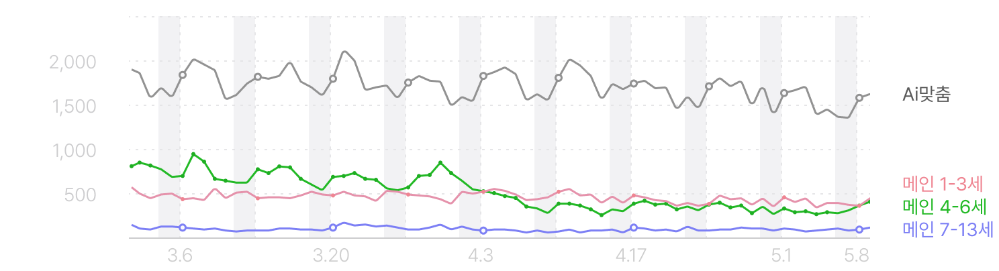
업데이트 주기와 이용자수의 상관관계 없음
반면 7~9세, 초등 저학년을 기점으로, 콘텐츠가 업데이트되는 월요일에 이용자수가 증가한 후 다시 감소하는 현상을 보였다. 이는 아이들의 자기 주도성이 강화됨에 따라
업데이트 요일을 인지하고 관심 콘텐츠만 빠르게 소비하기 때문으로 추측된다.
7-9세 1일 이용자수 | 단위: 명
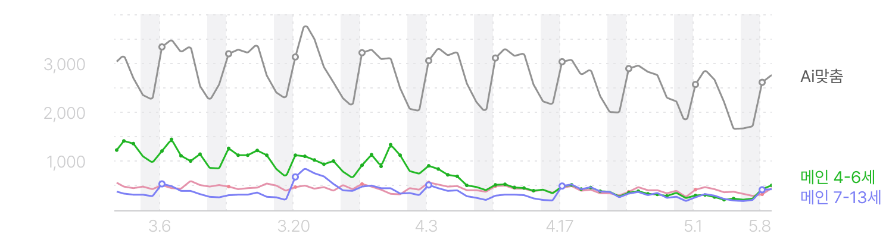
하지만 7세 이후, 연령대가 높아질수록
10-12세 1일 이용자수 | 단위: 명
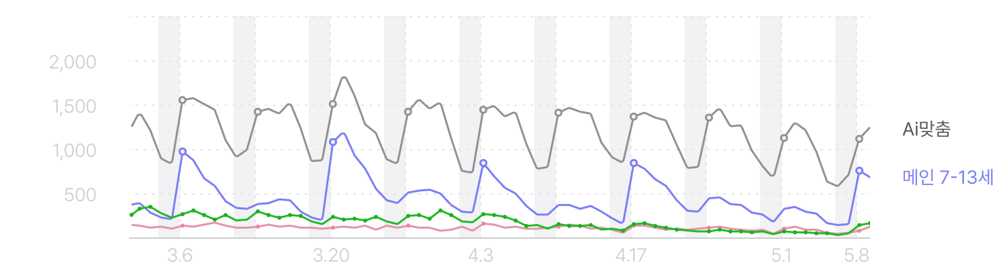
업데이트 주기에 따른 이용자수 패턴 변화 뚜렷
한편, '메인 4-6세' 섹션은 새로운 콘텐츠가 주중 요일별로 한 탭씩 열리는 분산 노출 방식을 채택하고 있다. 이 방식은 특정 요일에 이용자수가 집중되는 현상을
상쇄해, 주말을 제외한 모든 요일에서 고르게 이용하는 점을 보여준다. 이에 아래 가설을 도출했다.
주 혹은 격주 1회 월요일에 다량의 콘텐츠가 집중적으로 업데이트되면 선택 부담이 커져 일부 콘텐츠만 소비되는 경향이 발생하며, 이는 VOC에서 지적된
'선택의 어려움'과 직결된다.
따라서 적당한 양의 새로운 콘텐츠가 자주 업데이트되는 것은 아이들에게 관심 있는 책을 접할 기회를 늘려줄 것이다.
결국 업데이트 주기 및 콘텐츠 제공량에 따라 아이들이 느끼는 경험과 흥미 유발, 더 나아가 습관 형성에 영향을 줄 가능성이 있다고 판단했다.
Task A. '탐색' 문제 : 첫 화면 넷플릭스형 UX 변화에 따른 '탐색 패턴' 분석.
이 프로젝트를 진행하는 중, 2022년 12월에 이미 예정된 첫 화면 'Ai맞춤' 섹션이 콘텐츠 노출 증가 및 개인화를 목적으로 개편되었다. 넷플릭스와 같이 세로
스크롤로 탐색하되, 각 컴포넌트는 이너 스크롤로 탐색하는 UX로 변경되었고, 이 개편을 통해 콘텐츠 전시 개수는 기존 20개에서 약 90개로 늘었다. 또한 일부
컴포넌트는 키워드 클러스트 기반 개인화 추천 알고리즘이 적용되었다.
첫 화면 변경 후, 4개월간 데이터를 분석한 결과
최상단에 위치한 s01 컴포넌트(지금 보자! 오늘의 책)에 소비가 집중되었다.
이 영역에 개인화되지 않은 책을 전시하여 AB 테스트를 진행한 결과, 비개인화 그룹 대비 개인화 그룹의 소비량이 높게 나타나 키워드 클러스터 기술을
활용한 개인화 효과를 확인할 수 있었다.
반면, S01 컴포넌트 外 다른 컴포넌트는 개인화 여부와 관계없이 전반적으로 소비량이 낮았다. 영상 관련 컴포넌트를 제외한 나머지 컴포넌트 간 유의미한
차이가 나타나지 않았다.
결과적으로 기존 'Ai맞춤'과 개편된 'Ai맞춤' 모두에서 유사한 탐색 패턴이 관찰되었다. 기존에는 세로 스크롤을 통해 탐색할 수 있는 20개 콘텐츠에 소비가
집중되었으며, 개편 이후에는 최상단 s01 컴포넌트의 이너 스크롤 내 15개 콘텐츠에 탐색이 집중되는 양상을 보였다.
이 분석을 통해, 탐색 방식이 추가되는 넷플릭스 UX 도입이 콘텐츠 노출의 총량은 늘렸을지라도, 실제 탐색 경험을 확장하는 데에는 구조적 결함이 있음을 확인했다.
이에 향후 개선 방향은 단순한 물량 확대보다는, 아이들의 시선 흐름과 조작 편의성을 고려한 탐색 UX로의 전면적인 재검토가 필요하다고 판단했다.
temp | temp
temp
Ai맞춤 컴포넌트별 소비 현황 | 단위: 누적 권 2022.12 - 2023.4
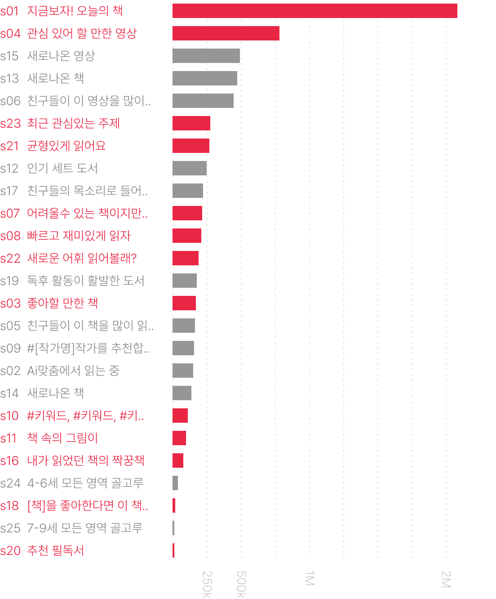
temp
Task A. '탐색' 문제 : 첫 화면 넷플릭스형 UX 개편 후, 콘텐츠 증가에 따른 세부 연령대별 '총 소비량' 비교 분석.
첫 화면 'Ai맞춤' 섹션의 넷플릭스형 UX에 의한 콘텐츠 증가가 연령대별로 어떤 영향을 주는지, 콘텐츠 이용 횟수를 기준으로 상세히 분석했다.
영유아 연령대는 첫 화면에 노출된 콘텐츠만 소비하는 경향이 확인된다. 이는 많은 콘텐츠량과 복잡한 UX로 인해 아이들의 탐색 에너지가 조기 소진되어 기존 이용하던 타
섹션 활동을 포기하게 만든것으로 유추된다.
초등 저학년 연령대는 'Ai맞춤' 섹션의 소비가 늘어나는 동시에 '메인 4–6세'섹션 소비도 일시적으로 증가했으나, 결국 영유아 연령대와 마찬가지로 가시 영역 콘텐츠
중심의 패턴으로 회귀하는 양상을 보였다.
결과적으로 영유아 및 초등 저학년인 4~6세, 7~9세는 'Ai맞춤' 섹션의 콘텐츠가 늘어나면서 기존에 소비하던 다른 섹션 이용이 줄어드는 경향을 보였다.
4-6세 이용횟수 | 2022.1 - 2023.4
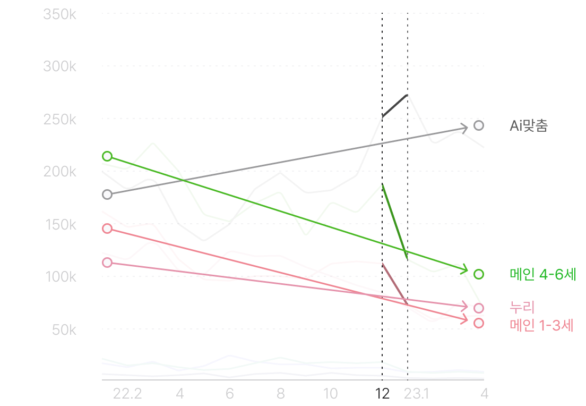
Temp
7-9세 이용횟수 | 2022.1 - 2023.4
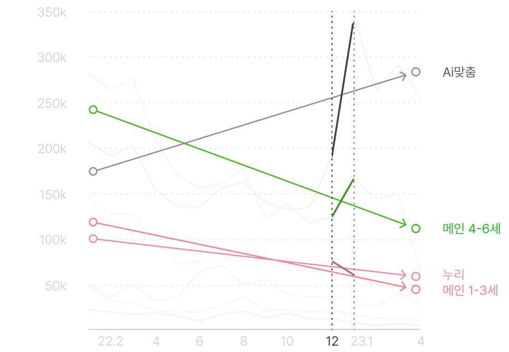
Temp
반면, 초등 고학년인 10~12세는 기존 섹션 소비에는 큰 변화가 없었고, 오히려 더 많은 콘텐츠 제공이 총 소비량 증가로 이어졌다. 이는 콘텐츠 제공량이 늘어날수록
총 소비량이 증가하는 특성이 관찰되었으며, 더 깊은 탐색을 유도할 수 있는 추가적인 탐색 경로 설계가 효과적일 것으로 판단했다.
즉, 7~9세를 기점으로 전시 콘텐츠 양에 따른 소비 패턴이 달라지는 만큼, 연령대에 맞춰 탐색 구조를 이원화해 제공할 필요가 있다고 판단했다.
누리 교과 섹션(관리 교사의 교보재)의 하락 추이는 학습 맴버십의 하락 추이와 결을 같이 하고 있어 연령대로 구분된 섹션보단 완만함을 확인할 수
있다.
10-12세 이용횟수 | 2022.1 - 2023.4
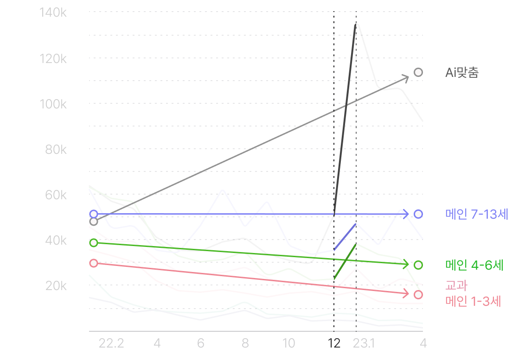
Temp
Task B. '검색' 문제 : 어린 연령대를 고려하지 않은 검색 경험.
이 서비스는 연평균 1,000여 개의 콘텐츠가 추가되고 있다. 이에 원하는 콘텐츠를 빠르게 찾을 수 있는 검색 기능의 중요성이 점점 커지고 있었다.
그러나 이 서비스의 검색 UX는 성인 대상 서비스와 동일하게 설계되어 있었다. 검색 버튼을 누르면 키보드가 함께 열리며, 최근 검색어와 인기 검색어만 제공되는 등,
텍스트 입력을 전제로 한 키워드 중심의 UX로 구성되어 있었다.
문제는 이러한 UX가 한글을 모르거나 이제 막 배운 아이에게는 '입력', '어휘', '이해' 모두에서 높은 장벽이 된다는 점이다. 결국 성인 기준으로 설계된 검색
UX는 아이들이 활용하기 어렵다고 판단했다.
Task B. '검색' 문제 : 상세 지표 분석.
검색의 경우 '북클럽'을 포함하여, 전사 서비스에서 공통으로 사용중이었다. 이에 다른 서비스와 비교하여 서비스 특성에 따른 검색 사용량을 확인했다.
전체 서비스 중, '북클럽'과 '백과'에서 검색을 가장 많이 이용한다. 특정되지 않은 콘텐츠를 탐색하고 소비하는 서비스 특성상, 어린이 서비스임에도 불구하고 검색의
니즈가 명확히 있음을 알 수 있다. 이는 '북클럽' 대비 회원수가 2배 가까이 더 많은 '스마트올'의 경우, '오늘의 학습'이라는 해야 할 Task가 명확히 정해져
있어 검색을 많이 사용하지 않는 지표를 통해서 확인된다.
하지만 전체 진입 이벤트 중, 61%는 이탈하고 26%만 검색 결과 콘텐츠를 열람한 것으로 나타난다. 즉, 4번 중 3번이 검색을 포기한다. 다만 영유아의 경우,
아무 곳이나 터치하다 실수로 검색에 진입한 것이라면, 실행 대비 결과의 비율로 판단해야 할 테고, 그 비율은 67%이다. 이는 검색 결과의 문제가 주원인으로
예상되지만, 동시에 검색 과정에서 아이의 시선에 맞춘 경험을 제공했는지도 함께 고민할 필요가 있었다.
서비스별 검색 진입수 | 2022.8.22
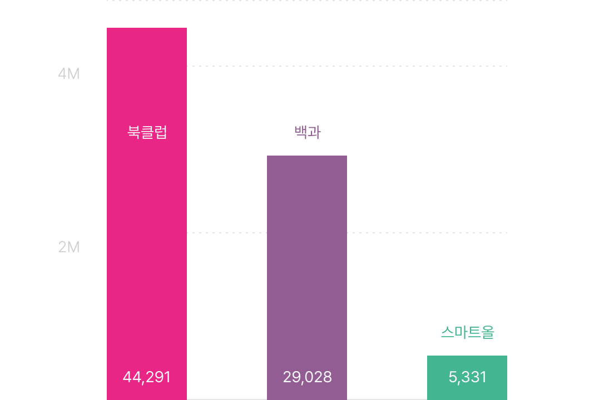
Temp
실행 대비 검색 결과 이벤트 | 2022.8.22
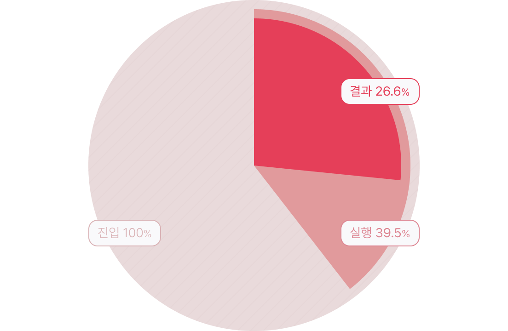
Temp
주로 찾는 키워드는 '아이쿠', '엉뚱 남매 공작소', '위기 탈출 넘버원', '쿠키쿠', '시시콜콜 랭킹쇼' 등, 애니메이션 시리즈명이 대부분인 점에서 검색의
목적이 이미 익숙한 콘텐츠에 진입하는 데 있다는 것을 알 수 있다. 이는 검색이 아이 관심사의 확장보다는 기존 선호하는 콘텐츠의 재소비에 머물고 있다는 한계를
보여주고 있다.
검색 키워드 | 2022.8.22
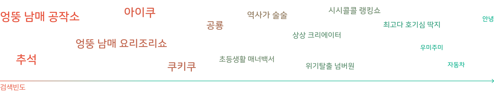
-- Temp --
Task C. '소비' 문제 : 끊기는 흐름 및 디지털에 최적화되지 않은 도서 뷰어.
어린이 도서는 성우 음원과 그림으로 인해 평균 용량이 7MB이며 약 5초의 다운로드 시간이 발생한다. 여기에 다운로드 완료 후 다시 탭해야 하는 구조적 결함은
불필요한 이중 대기를 초래했다. 이 과정은 탐색에서 소비로 이어지는 흐름을 끊어 아이들의 흥미를 저하시킬 뿐 아니라, 다운로드 완료 후 즉각적인 피드백이 없는 탓에
오류로 오인하는 경우도 발생했다. 기술적 개선으로 이중 로딩은 해결 가능하지만 용량에 따른 다운로드 시간은 줄이기 어려운 만큼, 이 시간을 유의미한 경험으로 전환할
브릿지 설계가 필요하다고 판단했다.
디지털 도서는 종이책과 달리 상황에 맞게 다양한 UX 설계가 가능하다는 장점이 있다. 그러나 이 서비스는 종이책 PDF를 그대로 노출하여 디지털 UX의 강점을 충분히
활용하지 못하고 있었다. 예를 들어, 펼침면 28인치 기준으로 제작된 종이책을 재가공 없이 10인치 태블릿에서 읽을 경우 가독성이 떨어져 독서 의욕을 저하시킬 수
있다.
또한 도서 뷰어의 기능과 인터페이스가 모든 연령층에게 동일하게 제공되고 있어, 어린이 도서의 경우 1년 차이만으로도 인지 수준과 요구되는 독서 경험이 달라지는 특성을
반영하지 못하고 있었다. 이에 책의 특성과 연령대를 고려한 도서 뷰어의 UX 재설계가 필요하다고 판단했다.
Task D. '활동 & 보상' 문제 : 접근이 어려운 '짝꿍책'과 '독후 활동', 주기가 긴 '별' 보상 체계.
기존 서비스는 책을 끝까지 다 읽어야만 '별 보상'과 함께 '짝꿍책' 및 '독후 활동'에 진입할 수 있었다. 이는 아이가 관심 있는 주제의 연관 도서를 탐색하거나
독후 활동을 하는 데 있어, '완독'이라는 허들이 작용함을 의미하며, 아이들의 자발적인 추가 탐색과 독후 활동 연결을 저해한다고 판단했다.
또한, 기존 독후 활동은 모든 책과 연령대를 대응하기 위해 범용적인 템플릿 방식을 채택했다. 이 과정에서 템플릿 종류가 과도하게 늘어나, 선택지가 많을수록 결정이
어려워지는 '힉의 법칙'에 따라 아이들에게 인지적 혼란과 피로감을 주었다. 또한, 읽은 책의 내용이나 난이도와 무관한 템플릿이 선택될 경우, 적절한 독후 활동을
경험하기 어렵다는 문제도 있었다.
한편, 보상 정책 역시 아이들의 지속적인 서비스 이용을 유도하는 데 한계를 보였다. 출석, 완독 등, 특정 미션 완료 시 지급되는 '별'을 모아 편의점에서 실물
상품으로 교환하는 방식은, 높은 비용으로 인해 보상 조건이 높게 설정될 수밖에 없었다. 이에 가장 저렴한 보상을 받는 데도 평균 1.5개월이 소요되는 등, 보상
주기가 길어 아이들의 흥미를 지속적으로 유지하기 어려웠다. 따라서 보상의 빈도와 즉시성을 높이는 새로운 보상 정책 도입이 필요하다고 판단했다.
Task C & D. '소비 & 활동' 문제 : 도서 소비 주요 지표 분석.
시각적 자극이 큰 영상 콘텐츠에 사용에 집중된 데이터는 보호자들이 제기한 '아이가 영상만 찾는다'는 VOC를 뒷받침한다. 또한 독서 탭 이용횟수가 전체 콘텐츠 사용
대비 현저히 낮은 것도 이러한 영상 편중 현상과 맥락을 같이한다. 특히 활자를 직접 읽는 e북 소비는 전체의 4.1%에 불과해, 문해력 향상을 위한 독서는 거의
이루어지지 않음을 확인할 수 있다.
완독률의 경우, '1권의 완독보다 10권의 열람이 더 중요할 수 있다.' 라는 의견에 깊은 토론이 있었다. 이에 평균 완독률만을 지표로 삼기보다, 많이 열람된 책의
완독률을 함께 비교하여 첫 화면 도서가 아이의 흥미를 끌고 있는지 판단했다.
유형별 콘텐츠 소비 비율 | 2022.7
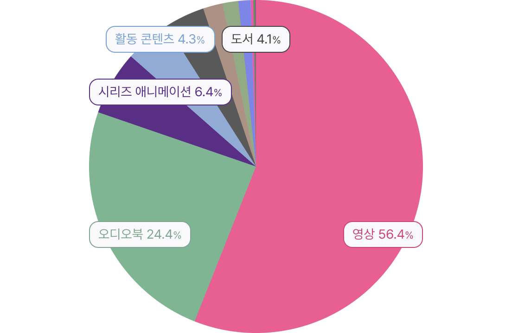
Temp
도서 완독률 | 2022.7
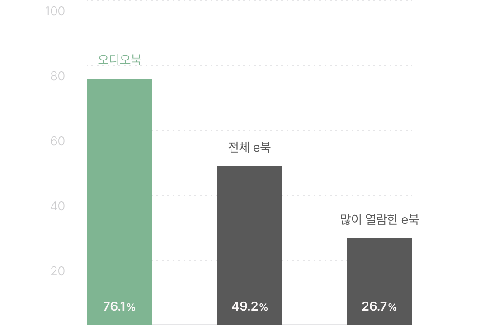
Temp
연간 평균 1,000권의 새로운 콘텐츠가 업데이트됨에도 불구하고 1인당 이용횟수는 하향 추세다. '많은 콘텐츠는 아이에게 선택 장애를 준다'라는 아이 보호자의
VOC와 함께보면, 이는 과도한 선택지로 인해 독서를 시작하지 못하는 구조적 문제로 해석된다. 즉, 문제는 콘텐츠 확대가 아니라 아이 취향과 수준에 맞는 콘텐츠로
자연스럽게 진입시키는 돕는 이용 시작 구조에 문제가 있다고 판단했다.
다만, 전체 1인당 이용횟수는 하향 추세이지만, 'Ai맞춤' 섹션과 '짝꿍책'은 각각 월 평균 약 12권과 4.5권으로 일정하게 유지되고 있다. 이는 책을 꾸준히
읽는 아이들이 완독 후 짝꿍책을 추가로 소비하는 반면, 그렇지 않은 아이들은 계속 읽지 않아, 두 집단 간 소비량 격차가 큰 것으로 예상된다. 현재 짝꿍책 정책은
완독 후 3권만 추천하는 방식에 머물러 있다. 꾸준히 읽는 아이들의 연속 소비를 위한 구조가 충분치 않다고 판단했다.
1인당 월 평균 이용횟수 | 2021.1 - 2023.4
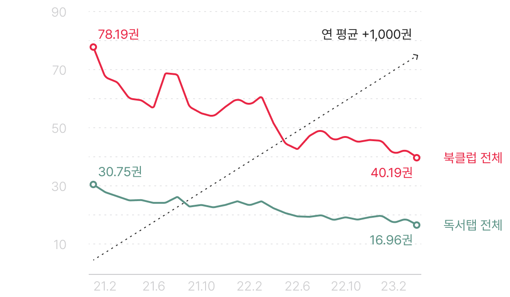
Temp
독서탭 기준 1인당 월 평균 이용횟수 | 2021.1 - 2023.4
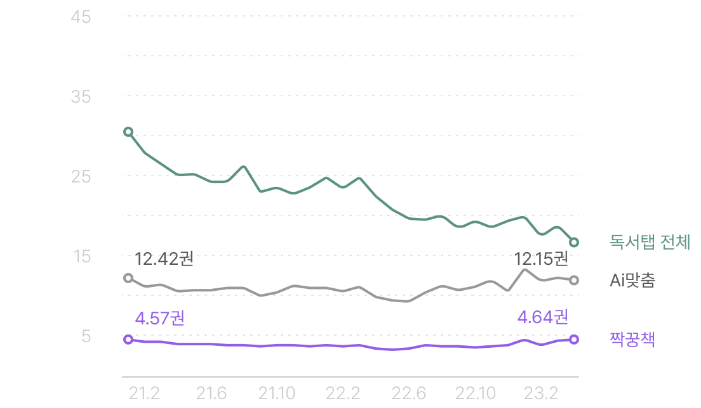
Temp
각 Task별 문제 해결을 위한 해야 할 일과 세부 목표 지표 정의.
앞서 정의한 문제 해결을 위해 해야 할 일과 세부 목표를 설정했다. 목표 지표는 과거 연관 데이터의 최대치를 기준으로 삼았고, 설정이 어려운 경우, 현 지표 대비
10~15% 상승을 목표로 했다. 이 내용은 CEO 보고 후, IT개발실 리더분들 포함 약 30여 명을 대상으로 워크숍을 통해 공유 · 전파했다.
Task A. 탐색
방향성 및 목표
관심 콘텐츠를 놓치지 않는 탐색 경험 제공
모든 섹션의 일정한 사용자 진입.
9세 이후 총 소비량 상승.
해야할 일
A-1. 개인화 기반 마련
복잡한 정보 구조에 의한 파편화된 탐색 경험.
단순한 탐색과 개인화가 용이한 피드 UI 도입.
온보딩 개선을 통한 개인화 초석 정립.
아이 개인에 맞춘 UI 및 UX Writing.
A-2. 콘텐츠 분류 정책 재 정의
연령대 구분으로 인한 오해 및 콘텐츠 놓침.
개인화를 위한 히스토리 기반 관심 키워드
중심으로 콘텐츠 분류 정책 정의.
A-3. 콘텐츠 업데이트 정책 재 정의.
새 콘텐츠가 업데이트 되는 월요일에 집중 소비.
매일 들어와도 항상 새로운 콘텐츠, 살아있는 피드.
A-4. 보호자 가이드 앱 개선.
아이가 서비스를 잘 활용하지 못할 것 같은 불안.
아이 활동 내역 기반으로 보호자가 능동적으로 관리할 수 있는 가이드라인 제공.
Task B. 검색
방향성 및 목표
아이 시선에 맞춘 검색 경험 제공
진입 대비 실행 비율 50%로 상승. 현 39.5%
실행 대비 결과 비율 77%로 상승. 현 67%
해야할 일
B-1. AND 키워드 활용
아이 입장에서 성공 확률이 낮은, 성인 서버스와 같은 일반적인 검색 경험.
추상적 키워드에서 구체적인 행동을 제안하는 키워드 제공.
B-2. 일상에 접목한 검색 UX
어린이 상황에 맞는 검색 경험 부재.
아이의 일상 생활 중, 느낀 감정이나 경험한 상황을 독서로 연결할 수 있는 탐색 플로우 설계.
Task C. 소비
방향성 및 목표
기능을 유연하게 배치해 목적에 맞게 사용
첫 화면 e북 완독률 26.7%→ 49.2%로 상승.
도서 소비량의 하락 추이 → 상승 추이 전환.
해야할 일
C-1. 도서 커버 신설
꾸준히 독서를 하는 아이들을 위한 연속 소비 장치(짝꿍책) 부족.
도서 다운로드 시간을 활용하여 연속 소비를 위한 구조 개선 및 영역 확장.
C-2. 뷰어 인터페이스 개선
연령 및 목적 구분없는 공통 뷰어 사용.
연령 및 목적에 따른 적합한 사용성 제공.
C-3. 디지털 최적화 (소비 중 활동 Task)
디지털 환경에 최적화 되지 않은 도서.
디지털 환경에 특화된 읽기 경험 제공 및 회사가 가진 자산을 활용해 타사 대비 경쟁력 확보. (활동Task와 연계)
C-4. 영상을 활용한 독서 유도 UX
과도한 영상 시청.
영상의 장점을 이용한 독서 유도 장치 제공.
Task D. 활동 · 보상
방향성 및 목표
목적에 맞는 활동, 즉각적인 보상 체계
독후 활동수 상승 추이 전환.
새로운 보상 체계 정착.
해야할 일
D-1. 독후감 작성 Flow 개선
완독 후, 노출되는 형식적이고 단편적인 독후 활동 플로우.
책을 읽는 중에도 언제든 독후 활동을 할 수 있는 환경 제공 (소비와 연계) 및 아이가 느낀 감정에 따라 적합한활동을 제안하는 플로우 설계.
D-2. 보상 체계 개선
편의점에서 교환 가능한 별 지급. 비용 발생에 따른 주기가 긴 보상.
즉각적인 성취를 경험할 수 있고, 부모도 참여 가능한 보상 체계 적용.